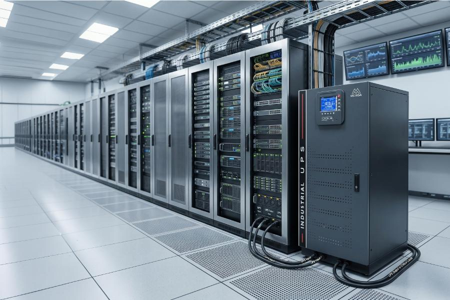
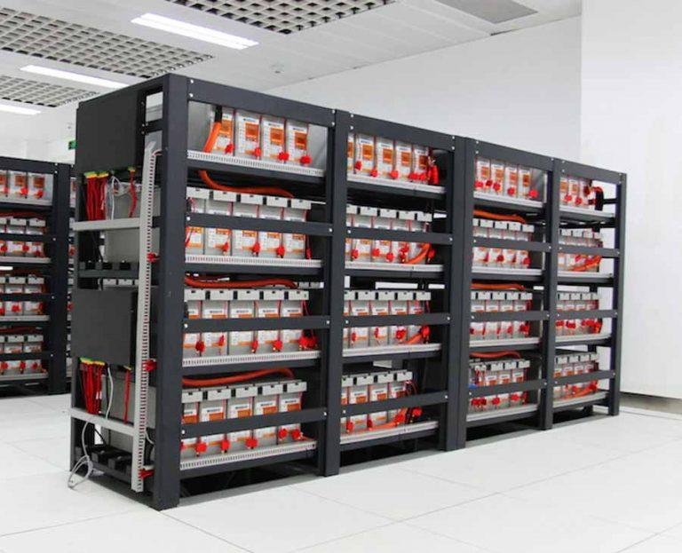
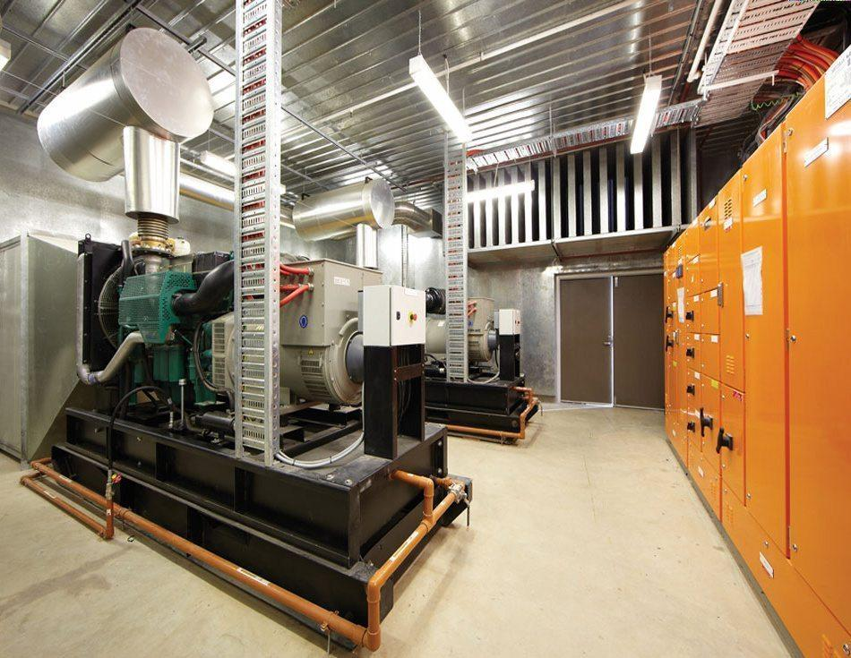
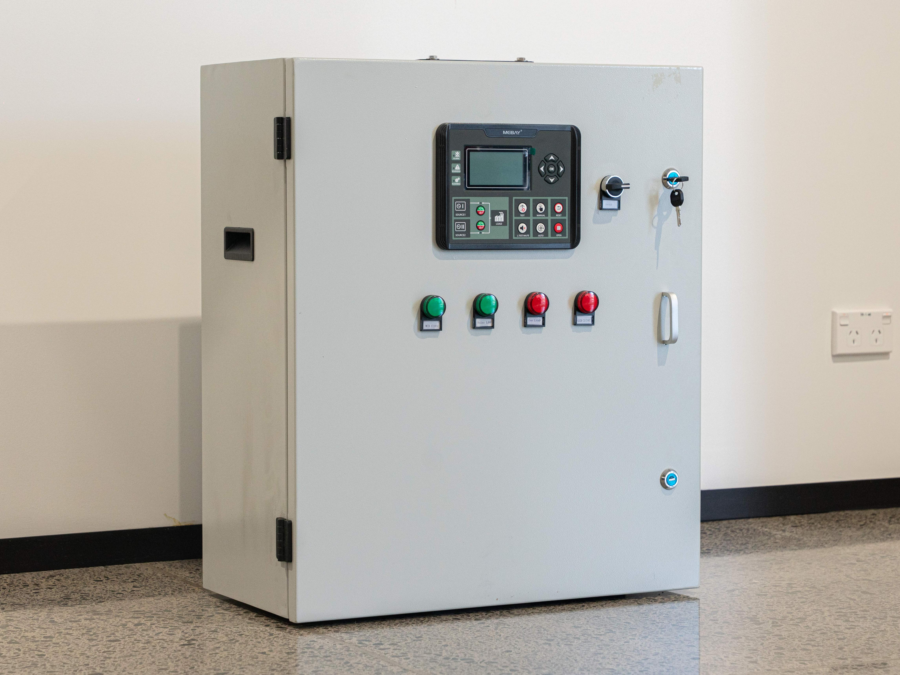
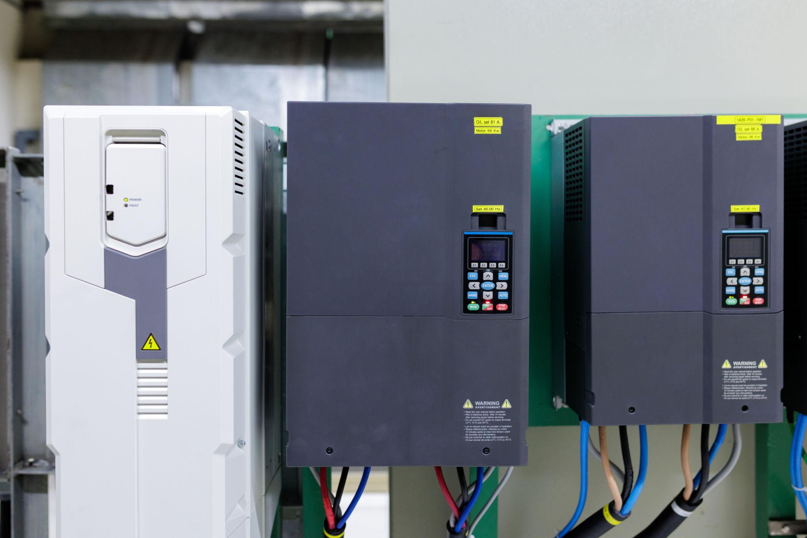
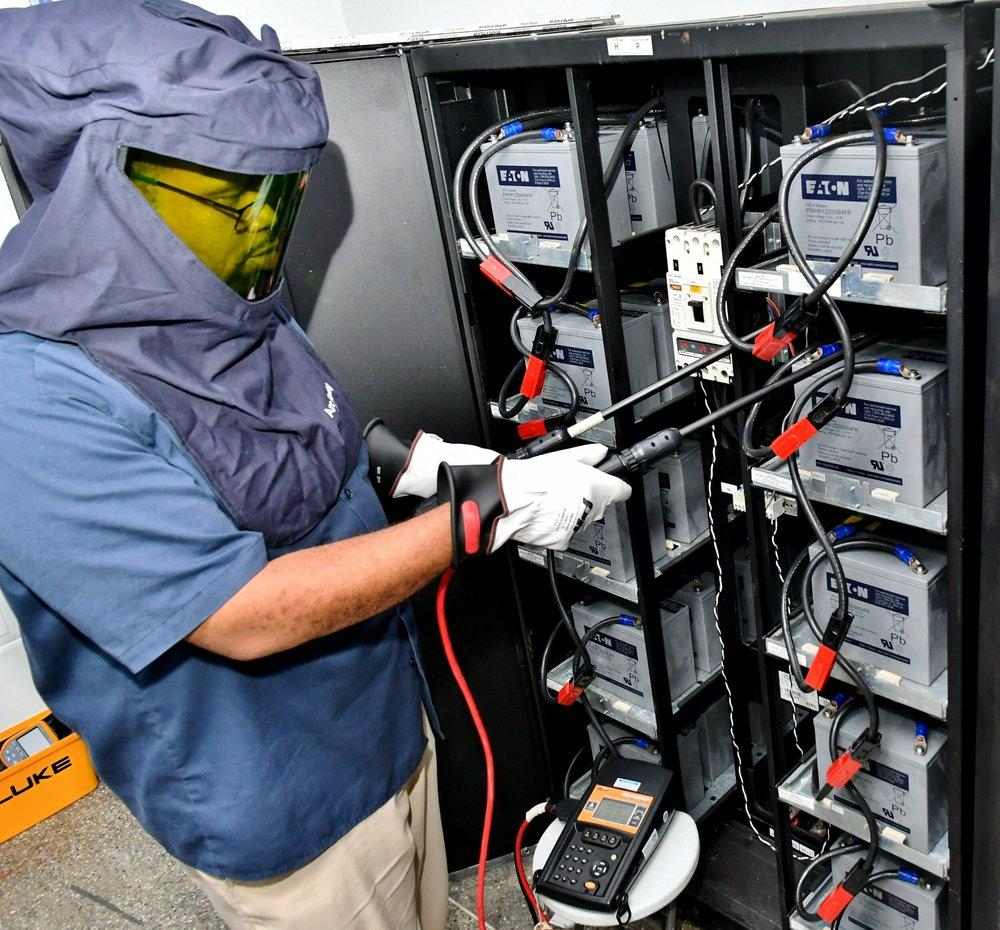

We provide professional UPS system installation services for offices, hospitals, industries, IT companies, and commercial buildings. Our UPS solutions deliver uninterrupted power during outages, protecting critical equipment from unexpected shutdowns.
We install online UPS, offline UPS, and industrial UPS systems using premium-quality equipment to ensure continuous power, maximum efficiency, and long-term reliability.


Our battery backup systems ensure uninterrupted operation during power failures by supplying clean and stable power to essential electrical equipment.
We supply and install high-performance battery banks designed for industrial, commercial, and critical infrastructure applications.
We install generator backup systems that provide continuous power during extended power outages for factories, offices, hospitals, and commercial facilities.
Our backup generators are integrated with electrical systems to deliver seamless operation and dependable emergency power whenever required.


Our Automatic Transfer Switch (ATS) systems automatically switch between the main power supply and backup generator during power interruptions.
ATS panels minimize downtime and ensure uninterrupted electrical supply for critical industrial and commercial operations.
We provide advanced inverter systems for residential, commercial, and industrial applications to ensure continuous and efficient power supply.
Our energy-efficient inverter solutions reduce power interruptions while protecting valuable electrical equipment from voltage fluctuations.


We provide preventive maintenance, battery health checks, troubleshooting, repairs, and annual maintenance contracts for UPS systems and backup power equipment.
Regular servicing improves system performance, extends equipment life, and ensures uninterrupted power whenever it is needed.